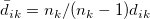
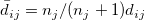
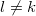
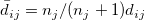
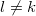
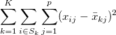
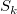
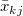
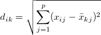

アルゴリズム (K-means法クラスター分析)
K-means法クラスター分析は最小二乗和を利用して観測グループに分類します。
欠損値がある観測データはＫ－means法クラスター分析を行う前に除外されます。
変数ｐでｎ個の観測点を持つ行列Ｘの場合、初期のクラスター中心はＫｘｐ行列により特定されるか、行列Ｘから既に定義されていたクラスター数より選ばれます。
- 観測データから初期クラスター中心を設定します
- 初めのＫ個の観測データはクラスター中心として割り振られています。
- 残りの観測データでループを行い、現在のクラスター中心を置き換えることができるか試します。
-
-
- もし観測点とそれに最も近いクラスター中心の距離が2つの直近のクラスター中心(クラスターiとクラスターｊ)よりも離れている場合、その観測点がクラスターiまたはｊのうち、より近い方のクラスター中心を置き換えることになります。
- そうでないとき、もし観測点と2番目に近いクラスター中心の距離が2つの直近のクラスター中心(クラスターiとクラスターｊ)よりも離れている場合、観測点は最も近いクラスター中心を置き換えることになります。
- 各観測値は最も近くにあるクラスターに分類され、その観測点とクラスター間の距離はその2点間のユークリッド距離で計算されています。
- i 番目の観測点がｋ番目のクラスターに置かれた場合、その観測点とk番目のクラスター間の距離はのように修正されます。また、その観測点とほかのクラスターとの距離は、
/math-fd91d2523217931bfcd6f684555f4d7f.png) と
と/math-f898efd8ac64b6621a2aeed350ce3164.png) がそれぞれｋ番目とj 番目のクラスターの観測数である場合、のように修正されます。もし観測点とi 番目のクラスター間の修正距離が最小でかつである場合、その観測点はk番目のクラスターではなくi 番目のクラスターにおかれます。
がそれぞれｋ番目とj 番目のクラスターの観測数である場合、のように修正されます。もし観測点とi 番目のクラスター間の修正距離が最小でかつである場合、その観測点はk番目のクラスターではなくi 番目のクラスターにおかれます。
- 各クラスター中心はそのクラスター内の観測点の平均に更新されます。
- クラスター内平方和は次のようになります。
- 
- ここで、はk番目のクラスター内の観測点で、はk番目のクラスターにあるクラスター中心のj 番目の変数に当たります。
- 更新されたクラスター中心を使うことでこの手順を繰り返し、各観測点をクラスターに所属させてクラスター中心も更新します。反復は最大反復数に到達するか、2回の連続した反復内でクラスター内二乗和がしきい値よりも小さくなった時に終了します。最後の反復の時に更新されたクラスター中心は最終クラスター中心と呼ばれます。
- Originのデフォルト最大反復数は10に設定されています。
- i 番目の観測とk番目のクラスター間の距離はユークリッド距離を使用して計算されています。
- 